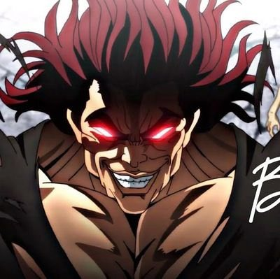

<!DOCTYPE html>
<html lang="fr">
    <meta charset="utf-8">
    <title>CV Yujiro Hanma</title>
</html>

<body>
    <section style="text-align:center ;">
    <H1>Yujiro Hanma</H1>
    
    <h1>12 rue Saitama, Tokyo</h1>
    <h1>295-555-090</h1>
    <h1>yujirohanma@testo.jp</h1>
    </section>

    <aside>
        <section style="text-align: left ;">
            <H1>Compétences</H1>
            <ul>
                <li>Homme le plus fort du monde</li>
                <li>Parle Japonais, Anglais et Français</li>
                <li>Soulève deux tonnes au développé couché</li>
            </ul>

            <h1>Hobbies</h1>
            <ul>
                <li>Victimiser Baki</li>
                <li>Victimiser Oliva Bizkit</li>
                <li>Victimiser tout le monde, enfait</li>
            </ul>
        </section>
    </aside>

    <section style="text-align: center;">
        <h1>Parcours professionnel</h1>
        <section>
        <h4>Entraineur de Baki</h4>
        <p>A entraîné Baki pendant 5 ans avant le grand tournoi.</p>
        </section>
        <section>
        <h4>Mercenaire pour l'armée</h4>
        <p>A combattu dans la guerre du Vietnam en tant que mercrenaire</p>
        </section>
    </section>

    <br>
    <br>

        <section style="text-align:center ;">
        <h1>Parcours académique</h1>
        <section>
            <h4>Entraînement avec Son Goku</h4>
            <p>S'est entraîné aux cotés de Son Goku dans la salle de l'esprit et du temp</p>
        </section>
        <section>
            <h4>Entraînement avec Jean Lassale</h4>
            <p>S'est entraîné au soulevé d'ancêtre avec Jean Lassale</p>
        </section>
        </section>
</body>